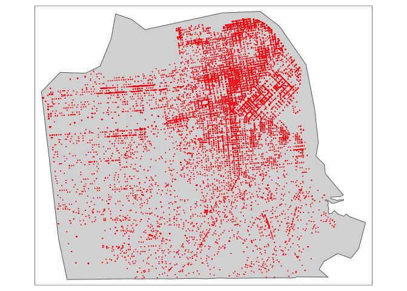
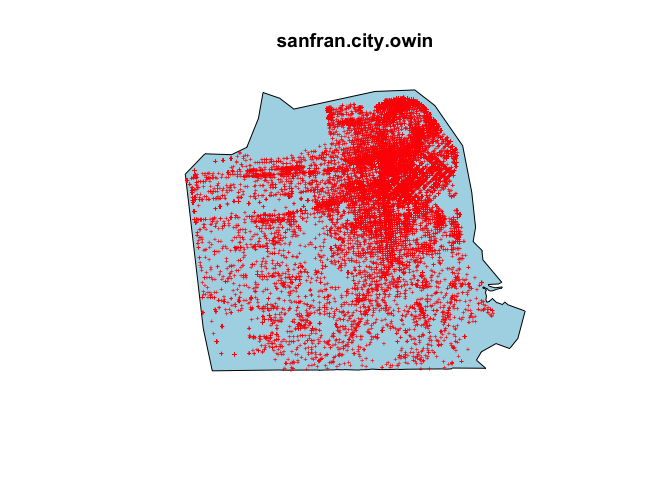
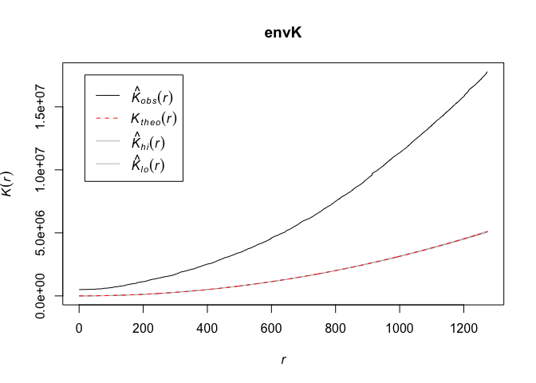
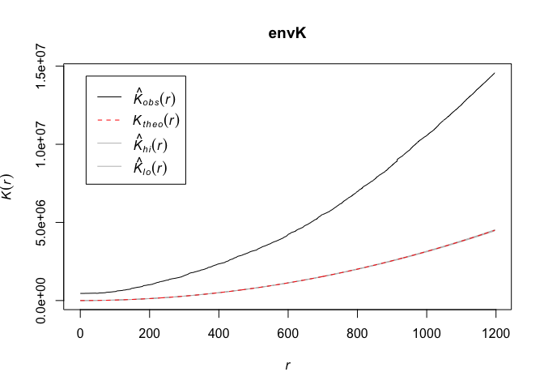
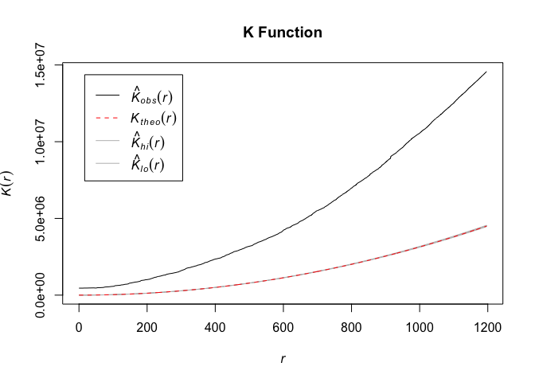

Lab 6: Point Pattern Analysis
CRD 150 - Quantitative Methods in Community Research
Professor Noli Brazil
February 14, 2020
In our journey into spatial R, we’ve been exclusively working with polygon data. In this guide you will learn how to handle and descriptively analyze point data in R. The objectives of the guide are as follows
- Learn basic spatial point data operations
- Learn how to map point data
- Learn how to examine point patterns
The guide will use data from the San Francisco Open Data Portal. Specifically, we will examine the spatial distribution of car break ins, which has gotten a lot of recent public attention.
This lab guide follows closely and supplements the material presented in Chapters 2.4, 2.5, 4.2 and 6 in the textbook Geocomputation with R (GWR) and Chapter 5 in the textbook Geographic Information Analysis.
Assignment 6 is due by 11:59 pm, February 20th on Canvas. See here for assignment guidelines. You must submit an .Rmd file and its associated .html file. Name the files: yourLastName_firstInitial_asgn06. For example: brazil_n_asgn06.
Open up a R Markdown file
Download the Lab template into an appropriate folder on your hard drive (preferably, a folder named ‘Lab 6’), open it in R Studio, and type and run your code there. Change the title (“Lab 6”) and insert your name and date. Don’t change anything else inside the YAML (the stuff at the top in between the ---).
Installing and loading packages
You’ll need to install the following package in R. We’ll talk about what this package provides as its relevant functions come up in the guide.
install.packages("spatstat")
install.packages("tmaptools")When you install, R might ask you the following question: Do you want to install from sources the package which needs compilation?
Politely type in “no” and press enter/return.
You’ll need to load the following packages. Unlike installing, you will always need to load packages whenever you start a new R session. You’ll also always need to use library() in your R Markdown file.
library(sf)
library(sp)
library(tidyverse)
library(tidycensus)
library(tigris)
options(tigris_class = "sf")
library(tmap)
library(rmapshaper)
library(units)
library(tmaptools)
library(spatstat)Bringing in data
First, download a zipped file of the shapefile data we will be using in this lab from GitHub using the following code.
download.file(url = "https://raw.githubusercontent.com/crd150/data/master/lab6files.zip", destfile = "lab6files.zip")
unzip(zipfile = "lab6files.zip")The files were downloaded into your current working directory folder (see getwd()).
Second, read San Francisco city boundary shapefile data into R using the function st_read()
sanfran.city <- st_read("sfcity.shp")Third, read San Francisco city tract shapefile data
sanfran.tracts <- st_read("sftracts.shp")The file contains total population (tpop), percent non-Hispanic white (pnhwhite), percent non-Hispanic Asian (pnhasn), percent non-Hispanic black (pnhblk), and percent Hispanic (phisp).
Finally, read in San Francisco point data of car break ins in 2017
sanfran.breakins <- st_read("sfbreakins.shp")Notice that we have 27,444 break ins with 8 attributes. The geometry type is POINT. Do a View() of the data to see the data.
In lecture, I went through the steps for downloading a csv file of car break ins from the San Francisco open data portal. The next step is to use the longitude (X) and latitude (Y) information to transform the data into a point spatial object. How do you do that? It is a bit complex, as you need to understand the concept of a Coordinate Reference System (CRS). Check the mini lab on georeferencing to understand how we converted the csv into the sfbreakins.shp file you read in above. We also uploaded a brief handout on Canvas (Week 6 readings folder - OverviewCoordinateReferenceSystems.pdf) that briefly describes CRS. Although this lab guide and all assignments will not require you to understand the material presented in the CRS mini lab and handout, I encourage you to read them carefully if you are planning to use point data in your final project.
You should get a map that looks like
tm_shape(sanfran.city) +
tm_polygons() +
tm_shape(sanfran.breakins) +
tm_dots(col="red")
Welcome to San Francisco!
spatstat package
As we learned in Lab 5 when we calculated spatial autocorrelation, sf spatial objects are not compatible with many spatial functions. This is the case here with spatial point pattern analysis methods. We will be using the package spatstat, which has a number of useful functions for point pattern analysis. The downside is that it introduces yet another object class: ppp objects. Fortunately, the package is well documented and is not too difficult to get used to. As we have done with sp, we’ll limit the nuts and bolts of how ppp objects work, and we’ll stick to sf point objects whenever possible.
There is no function that directly converts sf to ppp. We’ll need to convert sanfran.breakins first to an sp object using the as() function, which is a part of the sf package and was described in Lab 5.
sanfran.breakins.sp <- as(sanfran.breakins, "Spatial")Then convert this sp point object to a ppp object using as()
sanfran.breakins.ppp <- as(sanfran.breakins.sp, "ppp")Before we start running the point pattern analyses described in OSU Chapter 5, we need to clean the sanfran.breakins.ppp a bit.
First, note that a ppp object may or may not have variables or attribute information. In the spatstat world, variables are referred to as marks.
In this lab we will only concern ourselves with the pattern generated by the points and not their attributes. We therefore remove all variables or marks from the point object by using the marks() function and setting it to NULL
marks(sanfran.breakins.ppp) <- NULLSecond, many point pattern analyses need to have their study boundaries explicitly defined. This is the window through which we are observing the points. In this lab’s case study, the City of San Francisco is our study boundary or window. spatstat uses a special boundary object - an owin, which stands for observation window. We will need to coerce sanfran.city to an object of class owin using the function as.owin(). Similar to the sf to ppp conversion, you need to convert sf objects first to sp to coerce it into a owin object
sanfran.city.sp <- as(sanfran.city, "Spatial")And then use the function as.owin() to convert sanfran.city.sp to an owin object
sanfran.city.owin <- as.owin(sanfran.city.sp)
class(sanfran.city.owin)## [1] "owin"Third, you need to set or “bind” the city boundary sanfran.city.owin to the sanfran.breakins.ppp point feature object to establish the study window. Use the Window() function, which is a spatstat function.
Window(sanfran.breakins.ppp) <- sanfran.city.owinLet’s plot sanfran.breakins.ppp and sanfran.city.owin and see what we get.
plot(sanfran.city.owin, col='light blue')
points(sanfran.breakins.ppp, col='red', cex=.5, pch='+')
It might take some time before the break ins appear because there are over 27,000 of them. You’ll notice that rather than ggplot() or tm_shape(), we rely on the basic plot() function to map the points. Part of this is due to ppp and owin objects not working well with ggplot() and tm_shape(). Another reason is that the purpose of this specific lab is to do analysis and less about presenting your results, and plot() is a quick and dirty way to visualize our data. We do provide a few presentation-ready maps below using tm_shape() where applicable.
Were now ready to do some point pattern analyses. Huzzah!
Centrography
Before considering more complex approaches, let’s compute the mean center and standard distance for the break in data as described on page 125 of OSU. To calculate these values, you’ll need to extract the x and y coordinates from the sanfran.breakins.ppp object using the function coords()
xy <- coords(sanfran.breakins.ppp)
xyAnd then compute the mean center following equation 5.1 on page 125. We’ll use our best bud summarize() to help us out here.
# mean center
mc <- summarize(xy, xmean = mean(x), ymean = mean(y))
mc## xmean ymean
## 1 550552.1 4181222And then standard distance using equation 5.2 on page 125.
# standard distance
sqrt(sum((xy[,1] - mc[1])^2 + (xy[,2] - mc[2])^2) / nrow(xy))## [1] 19.80844Wednesday lecture setup
We went through the spatstat package during Monday’s lecture. We brought in car break in shapefile data, converted the data into a ppp object, and cleaned it up for analysis by unmarking it and setting its observation window. We’ll now go through the different methods to analyze point data. Before we do so, we’ll need to recreate our data from Monday.
First, install the following packages if you have not already done so (we did this during Monday’s lecture)
install.packages("spatstat")
install.packages("tmaptools")If you get the question “Do you want to install from sources the package which needs compilation?”, type in “no” and press return/enter.
Next, load the following packages
library(sf)
library(sp)
library(tidyverse)
library(tidycensus)
library(tigris)
options(tigris_class = "sf")
library(tmap)
library(rmapshaper)
library(units)
library(tmaptools)
library(spatstat)Next, bring in the data
download.file(url = "https://raw.githubusercontent.com/crd150/data/master/lab6files.zip", destfile = "lab6files.zip")
unzip(zipfile = "lab6files.zip")
sanfran.city <- st_read("sfcity.shp")
sanfran.tracts <- st_read("sftracts.shp")
sanfran.breakins <- st_read("sfbreakins.shp")Finally, convert data to ppp, unmark and set window.
sanfran.breakins.sp <- as(sanfran.breakins, "Spatial")
sanfran.breakins.ppp <- as(sanfran.breakins.sp, "ppp")
marks(sanfran.breakins.ppp) <- NULL
sanfran.city.sp <- as(sanfran.city, "Spatial")
sanfran.city.owin <- as.owin(sanfran.city.sp)
class(sanfran.city.owin)
Window(sanfran.breakins.ppp) <- sanfran.city.owinRead the section spatstat package to understand what each function is doing.
Point density
Centrography is rather dull because it ignores spatial variation in the data. Instead, we can explicitly examine the distribution of points across a geographic area. This is measuring first-order effects. First-order effects or patterns look at trends over space and are typically measured by point density.
Overall density
The overall density given in equation 5.3 in OSU on page 126 can be calculated as follows
CityArea <- as.numeric(st_area(sanfran.city))
nrow(xy) / CityArea## [1] 0.0002223546The code as.numeric(st_area(sanfran.city)) calculates the area (in meters squared) of San Francisco city, which represents the value a in formula 5.3. nrow(xy) represents the number of break ins in the city, which represents the value n.
Overall density is a little bit better than the centrography measures, but it is still a single number, and thus we can do better. As OSU states on page 127, we lose a lot of information when we calculate a single summary statistic like overall density. Let’s go through the two “local” density approaches covered in OSU: Quadrat and Kernel density. We’ll also go back to our old friend the census tract to discuss an important spatial point operation, summing up points in polygons.
Quadrat counts
A popular first-order method is to calculate quadrat counts, as is discussed on page 127 in OSU. Here, we break up the area into equally sized cells and count the number of points that fall into each cell.
We can carry out a simple quadrat analysis on our data using the quadratcount() function in the spatstat package. You have to specify the number of cells in your area. Here, we make a 6 x 6 grid (nx = 6, ny = 6), count the number of points within each of the 36 cells.
qcounts1<-quadratcount(sanfran.breakins.ppp, nx = 6, ny = 6)The object qcounts1 stores the number of points inside each quadrat. You can plot the quadrats along with the counts as follows.
#First, plot the city and points
plot(sanfran.breakins.ppp, pch=20, cols="grey70", main=NULL)
#The plot the cells and counts
plot(qcounts1, col = "red", add=TRUE)
The plot tells us that there are 63 break ins in the cell located on the bottom left corner of the city grid.
Six-by-six might be too small. Let’s instead make a 40 by 40 grid.
#dont plot qcounts - 40 x 40 grid wont show you much
qcounts2<-quadratcount(sanfran.breakins.ppp, nx = 40, ny = 40)In real life one should always try a range of row and column sizes to get a sense of how sensitive the results are.
These are neat plots, but let’s try to numerically summarize them. One measure that OSU offers is the variance-mean ratio (VMR), which is described on page 130. We’ll need to convert the resulting qcounts2 object into a regular data frame to calculate the VMR. Use the data.frame() function.
Qcount<-data.frame(qcounts2)Following page 130 in OSU, we can get a basic measure of the spatial arrangement of points by calculating the VMR of the quadrat counts
var(Qcount$Freq)/mean(Qcount$Freq)## [1] 174.0279OSU states a VMR greater than 1.0 indicates a tendency towards clustering. We get 171.6. Wow, that is super duper huge!
We can employ the Chi-square test for spatial randomness that OSU describes on page 142-43 using the handy dandy quadrat.test() function. The null is spatial randomness.
quadrat.test(sanfran.breakins.ppp, nx = 40, ny = 40)##
## Chi-squared test of CSR using quadrat counts
##
## data: sanfran.breakins.ppp
## X2 = 213043, df = 1303, p-value < 2.2e-16
## alternative hypothesis: two.sided
##
## Quadrats: 1304 tiles (irregular windows)Do we reject the null? Why?
Points in polygons
Rather than use quadrats, we can instead use census tracts, which is the standard definition of a neighborhood in the United States. We want to count the number of break ins in each census tract. To do this, we need to use a combination of the functions lengths() and st_intersects(). We won’t need any spatstat functions, so we go back to our sf objects sanfran.tracts and sanfran.breakins.
sanfran.tracts <- mutate(sanfran.tracts, breakins = lengths(st_intersects(sanfran.tracts, sanfran.breakins)))Let’s break this code down to understand what was done. The code st_intersects(x = sanfran.tracts, y = sanfran.breakins) produces a list object. Let’s actually view it so we have a clear idea of what this code is producing
View(st_intersects(sanfran.tracts, sanfran.breakins))We have a list of 194 vectors, which corresponds to the number of census tracts in San Francisco. Each vector specifies the row number of the car break ins that are intersecting with the tract corresponding to the sanfran.breakins. For example, the first tract contains 1,558 car break ins. In the sanfran.breakins object, these break ins are individually located in row numbers 40, 43, 56 and so on.
The code lengths(st_intersects(sanfran.tracts, sanfran.breakins)) provides the length of each vector in the list. Length of each vector corresponds to the number of car break ins in each tract.
lengths(st_intersects(sanfran.tracts, sanfran.breakins))## [1] 1558 1069 207 94 667 55 71 28 106 101 256 49 64 480 79
## [16] 28 54 213 161 99 285 72 75 86 730 127 59 18 75 472
## [31] 324 70 116 84 66 83 70 38 49 110 275 267 67 94 583
## [46] 81 227 100 96 541 272 222 382 205 359 53 185 116 95 132
## [61] 159 48 68 47 954 598 263 559 2002 460 207 135 44 121 80
## [76] 236 176 269 113 73 50 24 19 28 44 34 83 85 422 172
## [91] 86 221 23 30 28 25 41 29 13 14 28 38 38 38 38
## [106] 90 88 41 15 22 84 33 36 111 10 25 22 7 16 18
## [121] 48 34 12 8 7 22 19 19 6 18 50 70 59 42 35
## [136] 51 22 25 49 76 104 71 72 32 13 24 23 26 66 16
## [151] 36 29 32 24 28 55 48 149 20 28 35 21 39 20 25
## [166] 87 198 92 36 53 29 29 171 77 66 10 16 23 468 46
## [181] 43 107 6 361 34 171 37 71 741 20 808 47 8 200The first tract has 1,558 break ins, the second has 1,069, and so on.
The code breakins = lengths(st_intersects(sanfran.tracts, sanfran.breakins)) saves the number of car break ins as a new variable breakins. Putting this code within mutate() saves the new variable in the data frame sanfran.tracts. Type in View(sanfran.tracts), scroll all the way right, and you should see the variable breakins.
We can map the count of break ins by census tract, but counts do not take into consideration exposure. In this case, tracts that are larger in size or greater in population will likely have more break ins. Let’s calculate the number of break ins per 100 population.
sanfran.tracts<-mutate(sanfran.tracts,bpop = (breakins/tpop)*100)The code creates the variable bpop in the tibble sanfran.tracts, which represents the number of break ins per 100 population.
Let’s create a presentable choropleth map of break ins per 100 population.
tm_shape(sanfran.tracts, unit = "mi") +
tm_polygons(col = "bpop", style = "quantile",palette = "Reds",
border.alpha = 0, title = expression("break ins per 100 pop")) +
tm_compass(position = c("left", "bottom")) +
tm_scale_bar(position = c("left", "bottom")) +
tm_style("natural", title = "Car break ins in San Francisco\nTracts 2017", title.size = 0.95, frame=FALSE)Point intensity heat maps
In Chapter 3 of OSU, the authors describe the use of kernel density (heat) maps to show the spatial patterns of points. Because there is a bit of math behind the creation of these maps, we won’t go into the specifics in super detail. But, they are cool looking and as long as you understand broadly how these maps are created and what they are showing, they are a good exploratory tool. Also, a benefit of using a kernel density map to visually present your point data is that it does away with predefined areas like quadrats or census tracts. Your point space becomes continuous.
We use the function smooth_map() to create a kernel density map. This function is in the package tmaptools. Here, we don’t need to stay within the ppp world, so let’s revert back to our sf objects.
ds <- smooth_map(sanfran.breakins, bandwidth = 0.5, cover = sanfran.city, unit = "mi", style = "quantile")
class(ds)The most important parameter we need to set in smooth_map() is the bandwidth, which represents the radius of the kernel function. Think of the bandwidth as a smoothing parameter, where the larger it is, the smoother the map. We set this to 0.5, which represents 0.5 miles (we’ll specify miles using unit = "mi" as an option within the function). We’ll also need to specify the argument cover which specifies the boundaries of the map (SF boundaries). We use quantile to define the color style, but as outlined in Week 4’s lab, there are other methods. You must save the result of smooth_map() into an object, which in our case is ds.
The resulting object is a list. The specific object in ds that you’ll need to map is ds$polygons and the variable within ds$polygons that contains the smoothed values is level. Let’s map ds$polygons on top of sanfran.city to see what we get.
tm_shape(ds$polygons) + tm_fill(col = "level",
palette = "YlOrRd", border.alpha = 0) +
tm_shape(sanfran.city) + tm_borders()
and make the map look more presentable
tm_shape(ds$polygons) + tm_fill(col = "level",
palette = "YlOrRd", border.alpha = 0, title = expression("break ins")) +
tm_shape(sanfran.city) + tm_borders() +
tm_compass(position = c("left", "bottom")) +
tm_scale_bar(position = c("right", "bottom")) +
tm_style("natural", title = "Car break ins San Francisco Tracts\n2017", title.size = 0.95, frame=FALSE, legend.position = c("right", "top"))
Setting the bandwidth can really change your results. My suggestion is to test different bandwidth values. Or choose a bandwidth that makes sense given the city (e.g. big vs. small) and/or context (e.g. walking vs. driving) you are studying. In Los Angeles, you might use a larger bandwidth because it is a large city and people typically drive from place-to-place. In contrast, you might use a smaller bandwidth in New York because it is dense and people typically go from place-to-place by foot or subway.
To summarize, quadrats capture density by cutting up the study area into equally sized cells. Point in polygons capture density by using a pre-defined administrative boundary like census tracts (that should make contextual sense). Kernel density maps also use cells, but smooths (or interpolates) values across the study area to make a continuous surface.
Distance based methods
As detailed in OSU Ch. 5 page 130, there are a handful of distance (nearest neighbor) based methods for determining whether spatial points are clustered across a geographic space. Methods that measure the relationship between points, in this case their distance from one another, are capturing second-order effects.
Mean nearest-neighbor distance
The first distance-based method that OSU goes through is calculating the average nearest neighbor distance. Here, you calculate for each point the distance to its nearest neighbor. You do this using the function nndist(), which is a part of the spatstat package.
We first plug sanfran.breakins.ppp into nndist(), save that result into an object
break.ndist <- nndist(sanfran.breakins.ppp)The object break.ndist contains 27,444 values, corresponding to the 27,444 break ins in San Francisco. Each value represents the distance of each break in to the nearest break in. For example the distance to the nearest break in to the 14th break in listed in break.ndist is
break.ndist[14]## [1] 48.80192Take the mean of these values to get the average nearest-neighbor distance.
mean(break.ndist)## [1] 9.242017We find that the mean nearest distance is 9.24 meters. That’s pretty darn small, but small enough to suggest clustering?
We can formally test whether the mean nearest distance value indicates significant point clustering by using the Clark and Evan’s R statistic described on OSU page 143. The spatstat package has the function clarkevans.test() for calculating this statistic and testing whether it is statistically significant from 1 (which indicates no clustering). An R less than 1 that is statistically significant indicates clustering.
clarkevans.test(sanfran.breakins.ppp)##
## Clark-Evans test
## No edge correction
## Z-test
##
## data: sanfran.breakins.ppp
## R = 0.27563, p-value < 2.2e-16
## alternative hypothesis: two-sidedK function
OSU introduces a set of functions - G, F, and K - that describe the distribution of nearest neighbor distances. Our good friend spatstat provides canned functions for estimating these distributions. Let’s calculate K.
Before we do so, two things. First, OSU describes ways to assess spatial clustering inferentially by comparing the observed distribution of nearest neighbor distances to a theoretically derived expectation with “envelopes”. We can do this in R using the envelope() function. Second, OSU on page 137 warns us about edge effects. We went through edge effects as a spatial pitfall back in OSU Ch. 2, so this should not be new to us. R offers 5 edge effect corrections. We’ll use the guard zone correction, which we specify using correction = "border" in the envelope() function. Let’s calculate K and its envelope.
#this will take a bit
envK <- envelope(sanfran.breakins.ppp, fun = Kest, correction="border", nsim = 49)The argument fun = Kest tells R to calculate the K function (as opposed to the F, G and L functions). The argument nsim = 49 tells R to run 49 simulations to get the envelopes. For large point datasets, like break ins in San Francisco, I recommend setting nsim to something less than 100.
Let’s plot the K function to get a figure like the ones shown on OSU page 151.
plot(envK, main = "K Function")
It’s hard to see, but R is plotting the envelopes around the dashed red line. They are just really narrow. To calculate G and F, use envelope() in the same way, replacing Kest with Gest and Fest, respectively, in the fun argument.
All the evidence provided thus far - quadrats, Clark Evans test, nearest-neighbor distance, the K function - indicate that break ins significantly cluster. The maps we created help you identify where this clustering occurs.
Assignment 6
Download and open the Assignment 6 R Markdown Script. Any response requiring a data analysis task must be supported by code you generate to produce your result. (Just examining your various objects in the “Environment” section of R Studio is insufficient—you must use scripted commands.).
- The following figures show plots of the G function for different sets of points. Indicate the point pattern - Complete Spatial Randomness or Clustered - in each plot. (1 point each)
- For the plot shown in (b), explain what is causing the G function’s staircase shape. (1 point)
- The purpose of this question is to introduce you to the world of open data. Specifically, we explore 311 calls for service. 311 is a non-emergency phone number that people can call in many cities to find information about services, make complaints, or report problems like graffiti or road damage. Pick one of the following cities and examine its open data readiness for 311 calls by answering the questions that follow.
- Data Quality (2 points)
- Which city did you pick? How many years of data are available?
- Can you understand the variables? Is there a codebook that allows you to identify what these variables mean?
- Does it have 4 key variables: (1) Date and time of request; (2) Location (is it coordinates, addresses or both?) (3) Description of the call (4) Has the city addressed this call? Describe one other variable from the data that you think might be useful for an analysis.
- Usability (2 points)
- Can you filter the data based on variable values?
- Can you map the data from the site? If so, describe one map.
- Can you make graphs and plots of the data from the site? If so, describe one graph/plot.
- Can you download the data as a csv and open it in Excel?
- Can you download the data as a shapefile?
- Data wrangling (2 points)
- Download 2020 data as a csv and open it in Excel. How clean are the data? Do you see any weird characters or major data cleaning needs?
- How clean are the variable (column) names? Any space or weird characters in the variable names?
Bring the file into R. Identify the top three 311 requests in 2020 in your city. You must show your R code for this question. (1 point)
Extra credit (2 points): Produce an interesting map using any of the map types we discussed from OSU Ch. 3 and Ch. 4. You must show your R code. If you need to convert your points to sf objects, read the georeferencing mini lab. Describe your results.
- In the next two questions, you will be exploring the spatial distribution of Airbnb listings in the City of Oakland. Airbnb involves renting an entire home, a room or a shared room, typically from a private citizen. The data were downloaded from Airbnb’s public use data site. You will be using the shapefiles oaklandcity.shp, which contains Oakland City boundaries, oaklandtracts.shp, which contains Oakland City tracts, and airbnboak.shp, which contains Airbnb locations in 2017. A record layout of oaklandtracts.shp can be found here. I zipped the three shapefiles up and loaded the folder onto GitHub. Use the following code to read the file in.
download.file(url = "https://raw.githubusercontent.com/crd150/data/master/assign6files.zip", destfile = "assign6files.zip")
unzip(zipfile = "assign6files.zip")- Use two first-order approaches to examine the spatial distribution of Airbnb locations in the city. What do your results suggest about the pattern of Airbnb locations? (2 points)
- Plot the K function with its envelopes using the
correction = "border"correction. What does the K plot suggest about the pattern of Airbnb locations? (2 points) - Plot the F and G functions with their envelopes using a border correction. What do the F and G plots suggest about the pattern of Airbnb locations? (2 points)
- Airbnb has received criticism regarding its effects on local communities. See this article outlining the major criticisms. Let’s descriptively explore the validity of these criticisms in Oakland using our data set.
- Community advocates claim that Airbnb increases rent. What is the correlation between tract-level rent and the number of Airbnb listings per 1,000 housing units? (1 point)
- This article contends that Airbnb promotes housing vacancy. Calculate the correlation between percent vacant housing and the number of Airbnb listings per 1,000 housing units. (1 point)
- Another claim is that Airbnb locations are in predominantly white, higher income, and gentrifying neighborhoods. What is the correlation between the number of Airbnb listings per 1,000 housing units and percent black, Hispanic, and median household income? (1 point)
- Summarize your findings in (a)-(c). (1 point)
Website created and maintained by Noli Brazil